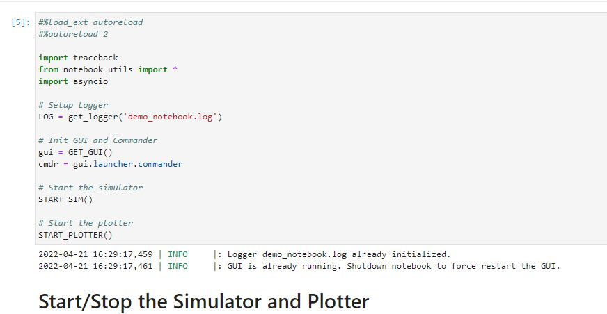

The simulator tool for this course reconstructs the robot environment virtually with a virtual robot, virtual sensors, and virtual environment and plotting tool.
This allows us to simulate PID, localization, and a variety of other algorithms virtually, avoiding hardware bugs and environment noise before moving these algorithms over to the real world.
In this lab, we used the simulator environment to perform simple open-loop and closed-loop control based on TOF sensor information. Finally, plots were generated and saved to analyze the results of this simulation.
Figure 1: Lab 4960 Simulator Initialization (Provided)
This part involved setting up the simulator, and installing all relevant python packages for the simulator to run. This included packages such as box2d via a .wheel file, and all relevant dependencies such as numpy pygame pyqt5 pyqtgraph pyyaml ipywidgets and colorama.
Along with this package installation process, python was upgraded to ensure that it is at the correct version to run the simulator and its relevant dependencies.
First, the simulator jupyter notebook was downloaded and extracted in the project folder. In addition, the virtual environment was setup with the following command:
virtualenv ece4960-venv
This allowed all installed packages to stay local to the project being worked on, instead of afffecting all python projects on the computer.
The first relevant functionality in the simulator is the Start/Stop functionality. This straightforward functionality simply starts up the simulator, as illustrated below:
The second relevant functionality is the commander class, which allows for plotting, retrieveing sensor data, resetting the simulator, and driving the robot in the simulator. These functionalities are illustrated below:
The first task for this simulator lab was performing opern loop control with the simulator robot.
The objective with this task was to have the robot execute a square path in the map.
The resulting plots of both the odometry and the ground truth data were plotted with the simulator functions on the map, resulting in the following plots:
As seen above, firstly the odometry data (shown in red) is completely off, and does not nearly follow the robot trajectory. However, we do see that the open loop control does execute squares.
This being said however, the ground truth data is not quite precise. If we zoom in closer on the executed square, we can see that the robot path gradually drifts over time:
Above, we can see more clearly that the square gradually rotates. This is mostly due to the robot's inability to execute perfect 90 degree turns.
Here, the duration of the velocity command is 1.5 seconds going in a straight line, and 1.535 seconds rotating with the following commands:
cmdr.set_vel(0.3, 0)
await asyncio.sleep(1.5)
cmdr.set_vel(0, 1)
await asyncio.sleep(1.535)
As mentioned above, the robot does not always execute the same path, but gradually drifts off path.
This part of the lab involved designing a simple closed loop controller in Jupyter notebook to avoid obstacles. This was done with the following commands:
As seen in the above image, the robot velocity is set to lin_speed (in this case 1.0), and it retrieves the sensor information after executing this velocity command.
If the robot detects that the sensor information retrieved is below the threshold (in this case set to a distance of 0.3m, then the robot rotates 90 degrees in place and continues to drive forward at the same previous speed.
This behavior is demonstrated in the image below:
Here, the robot speed is set to a max linear speed of 1.1. This was determined to be the maximum achievable speed without having the robot bump into walls due to its inability to read sensor information and stop on time.
To further prevent collisions, the robot speed could be set slower. In the below case, the linear speed is set to 0.7. This improves the angle of rotation (as seen above, there is significant angular drift with high linear speed). This is shown below:
Seen above, the robot executes better angular rotations at slower linear speeds, and then gets stuck in a rectangular pattern avoiding walls.
How close can the virtual robot get to an obstacle without colliding?
To determine the closest distances, the control loop was ran over the course of several minutes while printing out sensor values at which the robot effecutates a rotation. A snippet of them are shown below:
Here, the minimum value found was ~0.12004m at a linear speed of 1.1.
Over the course of 10+ trial runs, the obstacle avoidance code did not fail, as demonstrated by the above true pose plots showing that the robot always stops and rotates before hitting a wall.
- - - - - This concludes Lab 10- - - - -